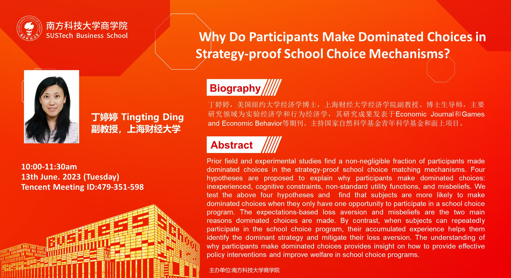
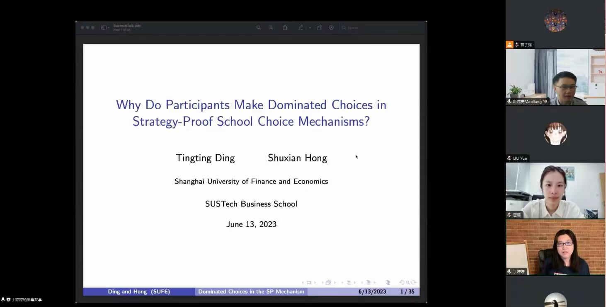

2023年6月13日上午，应南方科技大学商学院应用经济学系叶茂亮副教授的邀请，上海财经大学经济学院副教授丁婷婷做了题为“Why Do Participants Make Dominated Choices in Strategy-proof School Choice Mechanisms?”的在线讲座。
丁婷婷老师于美国纽约大学获得经济学博士学位，现任上海财经大学经济学院副教授、博士生导师，主要研究领域为实验经济学和行为经济学，其研究成果发表于Economic Journal和Games and Economic Behavior等经济学顶级期刊，主持国家自然科学基金青年科学基金和面上项目。
在择校匹配（matching）问题中，抗操纵性（strategy-proofness）是政策制定者选择匹配机制的一个重要考量因素。抗操纵性意味着择校参与者只需了解并提交自己的真实偏好，不用浪费时间和资源去研究其他人的偏好与填报策略，有助于减少因参与者策略精通度（strategic sophistication）不同而带来的不公平匹配。然而，实地实验和经验证据却发现不可忽视比例的择校参与者在抗操纵性择校匹配机制中仍然选择被占优的策略（dominated strategy）。因此，丁婷婷副教授与其合作者通过实验室实验的方法探究该问题背后的行为原因。
首先，丁婷婷副教授提出了四点可能的原因：经验不足导致的决策失误（mistakes due to inexperience）、认知局限（cognitive constraints）、非标准效用函数（non-standard utility function）和错误信念（misbeliefs）。随后，丁婷婷副教授介绍了其通过采用延迟接受机制（DA mechanism）作为匹配机制设计实验的过程。最后，研究结果显示当受试者只有一次参加学校选择项目的机会时，他们更有可能选择被占优策略，并且基于期望的损失厌恶（expectations-based loss aversion）和错误信念是做出主导选择的两个主要原因。相比之下，当被试可以反复参与择校计划时，他们积累的经验有助于识别占优策略并减轻损失厌恶。
该研究有利于相关政策制定者更好地理解择校参与者为什么做出被占优的选择。这为在择校机制中提供有效的政策干预和改善福利等重要相关问题提供了重要启示。
此次线上讲座持续100分钟，吸引了来自南方科技大学商学院以及各兄弟院校的数十位师生参加。线上讨论热烈，丁婷婷副教授也对听众提问一一做了详细回复。

